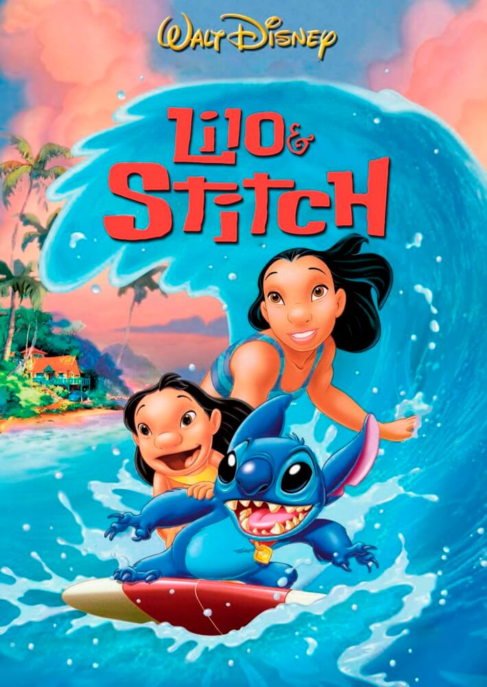

Arquitectura de APIs RESTful
Diseño de servicios para intercambiar datos entre aplicaciones.



Rocío diseñó este simulador de latencia para evaluar la velocidad de respuesta de las consultas del arcade:
// Presiona el botón para disparar una petición simulada con latencia calculada dinámicamente...